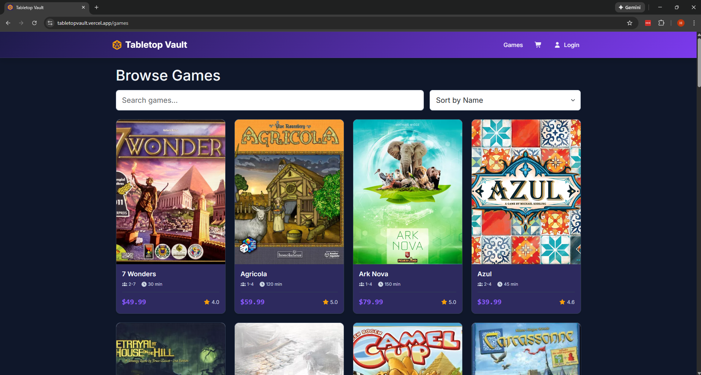
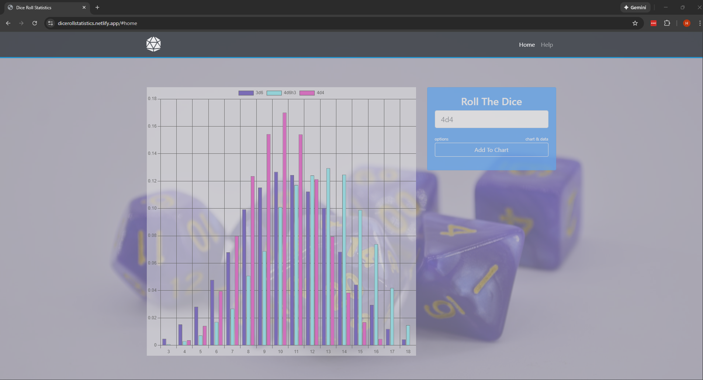
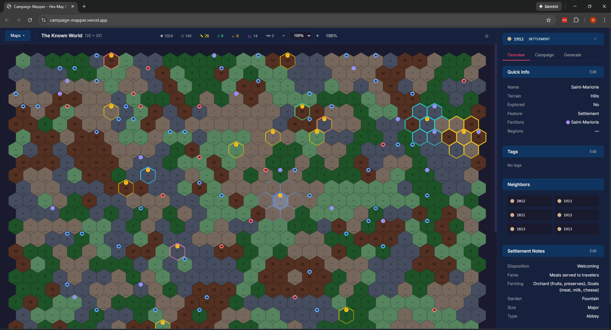
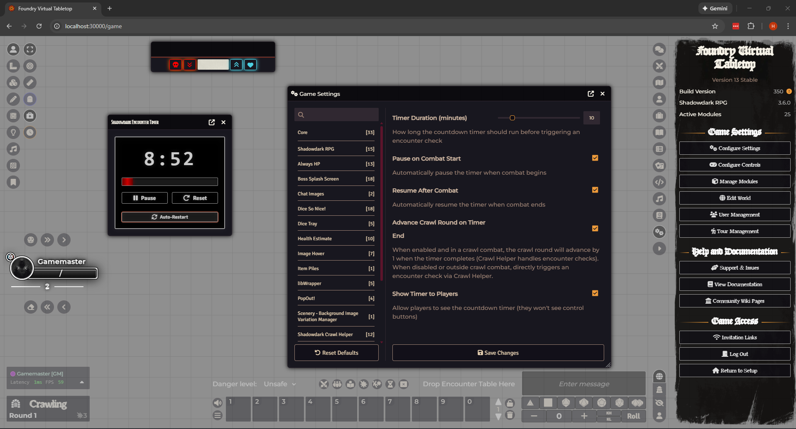
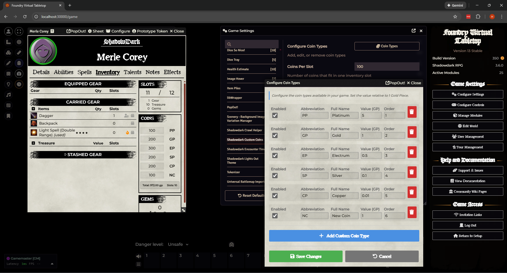

USGS Siren
An interactive GIS application for the U.S. Geological Survey that visualizes and analyzes invasive species occurrence data across North America, aggregating millions of records from multiple data sources.
Hello, I'm
|
Building modern web applications and solving complex problems.
Hi! My name is Harrison Pickett. I am a Software Developer passionate about building elegant solutions to complex problems.
With a Bachelor's degree in Computer Science from the University of Iowa, I bring both technical expertise and creative problem-solving to every project. I'm dedicated to writing clean, maintainable code and creating intuitive user experiences.
When I'm not coding, you'll find me exploring history, diving into science fiction novels, or enjoying tabletop games with friends.
A selection of projects I've worked on
An interactive GIS application for the U.S. Geological Survey that visualizes and analyzes invasive species occurrence data across North America, aggregating millions of records from multiple data sources.


A dice roll simulator that calculates and visualizes probability distributions. Plot multiple dice configurations on the same chart to compare curves - perfect for tabletop RPG players optimizing their builds.

A hexcrawl campaign management tool for tabletop RPG game masters. Create hex maps with image overlays, procedurally generate terrain and settlements, track factions and territories, and keep campaign notes.

A Foundry Virtual Tabletop module that adds an automated countdown timer for random encounter checks. Features auto-restart, combat pause/resume integration, and crawl round advancement.

A Foundry Virtual Tabletop module for the Shadowdark RPG system. Adds custom currency types beyond the standard Gold, Silver, and Copper while maintaining slot-based encumbrance tracking.
Have a project in mind? Let's work together.